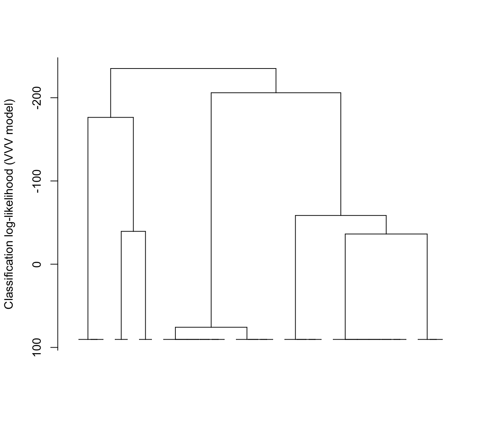
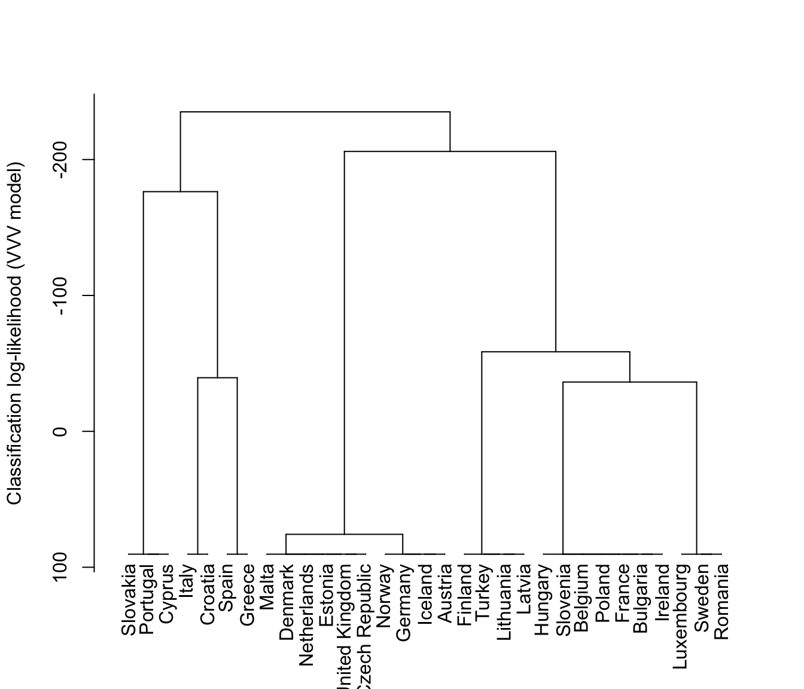
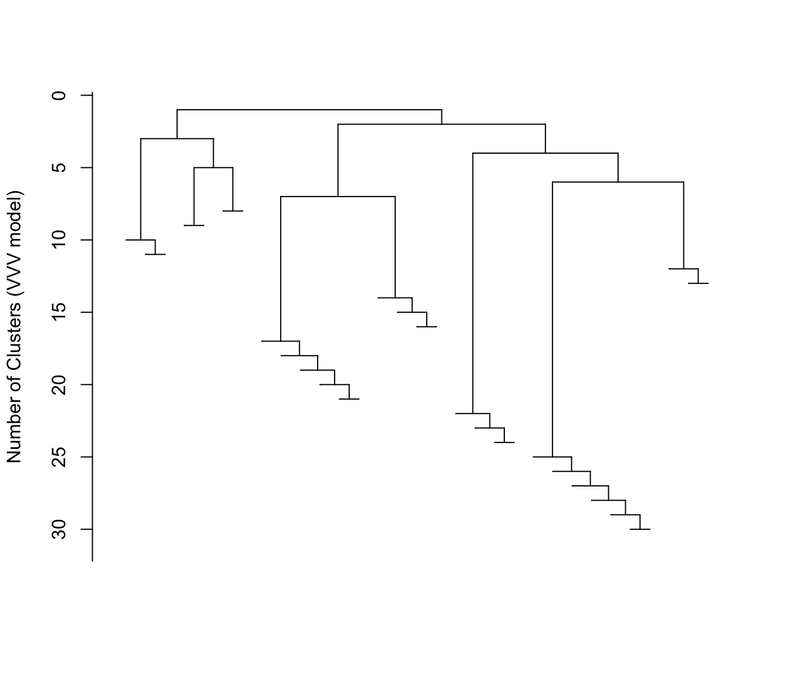
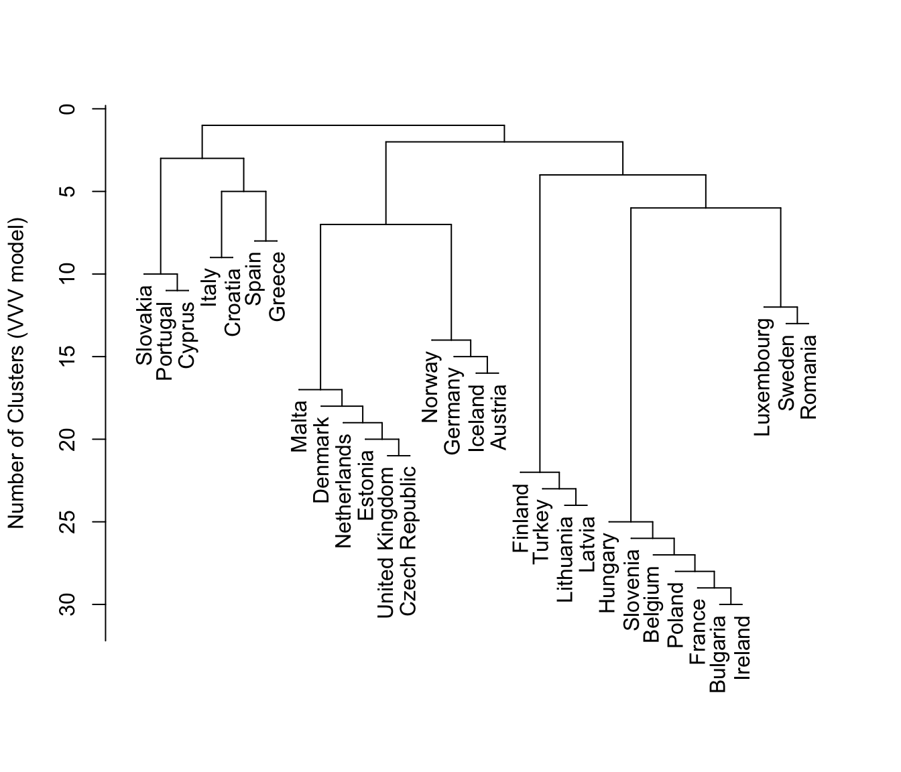
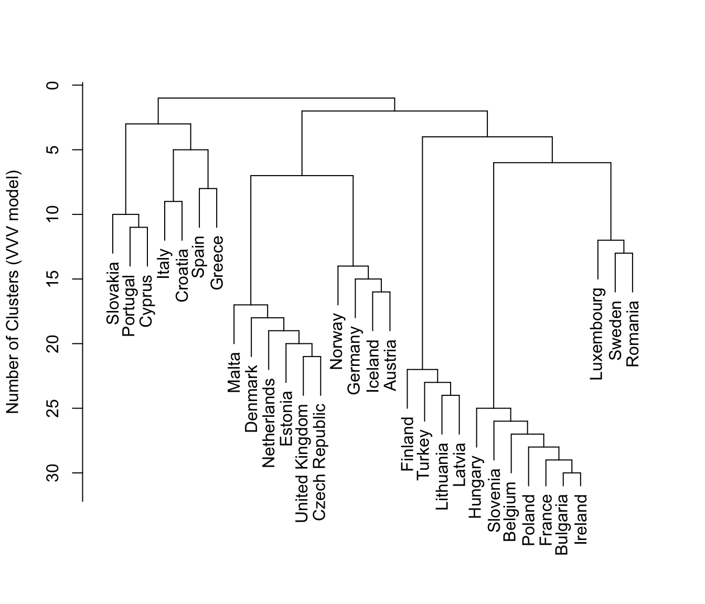
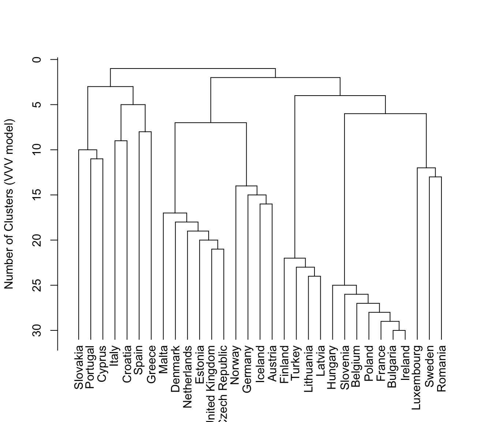
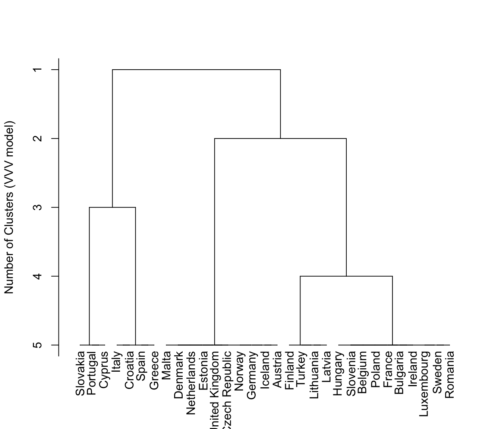

Dendrograms for Model-based Agglomerative Hierarchical Clustering
plot.hc.RdDisplay two types for dendrograms for model-based hierarchical clustering objects.
Arguments
- x
An object of class
'hc'.- what
A character string indicating the type of dendrogram to be displayed.
Possible options are:"loglik"Distances between dendrogram levels are based on the classification likelihood.
"merge"Distances between dendrogram levels are uniform, so that levels correspond to the number of clusters.
- maxG
The maximum number of clusters for the dendrogram. For
what = "merge", the default is the number of clusters in the initial partition. Forwhat = "loglik", the default is the minimnum of the maximum number of clusters for which the classification loglikelihood an be computed in most cases, and the maximum number of clusters for which the classification likelihood increases with increasing numbers of clusters.- labels
A logical variable indicating whether or not to display leaf (observation) labels for the dendrogram (row names of the data). These are likely to be useful only if the number of observations in fairly small, since otherwise the labels will be too crowded to read. The default is not to display the leaf labels.
- hang
For
hclustobjects, this argument is the fraction of the plot height by which labels should hang below the rest of the plot. A negative value will cause the labels to hang down from 0. Because model-based hierarchical clustering does not share all of the properties ofhclust, thehangargment won't work in many instances.- ...
Additional plotting arguments.
Value
A dendrogram is drawn, with distances based on either the classification likelihood or the merge level (number of clusters).
Details
The plotting input does not share all of the properties of hclust
objects, hence not all plotting arguments associated with hclust
can be expected to work here.
Note
If modelName = "E" (univariate with equal variances) or
modelName = "EII" (multivariate with equal spherical
covariances), then the underlying model is the same as for
Ward's method for hierarchical clustering.
References
J. D. Banfield and A. E. Raftery (1993). Model-based Gaussian and non-Gaussian Clustering. Biometrics 49:803-821.
C. Fraley (1998). Algorithms for model-based Gaussian hierarchical clustering. SIAM Journal on Scientific Computing 20:270-281.
C. Fraley and A. E. Raftery (2002). Model-based clustering, discriminant analysis, and density estimation. Journal of the American Statistical Association 97:611-631.
Examples
data(EuroUnemployment)
hcTree <- hc(modelName = "VVV", data = EuroUnemployment)
plot(hcTree, what = "loglik")

plot(hcTree, what = "loglik", labels = TRUE)

plot(hcTree, what = "loglik", maxG = 5, labels = TRUE)
plot(hcTree, what = "merge")

plot(hcTree, what = "merge", labels = TRUE)

plot(hcTree, what = "merge", labels = TRUE, hang = 0.1)

plot(hcTree, what = "merge", labels = TRUE, hang = -1)

plot(hcTree, what = "merge", labels = TRUE, maxG = 5)
